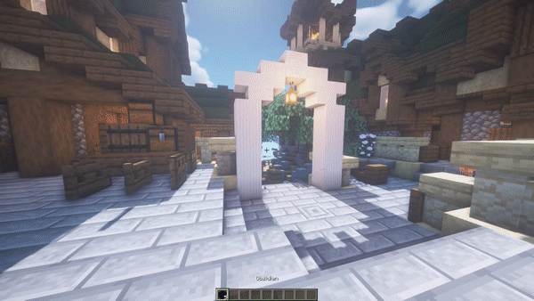
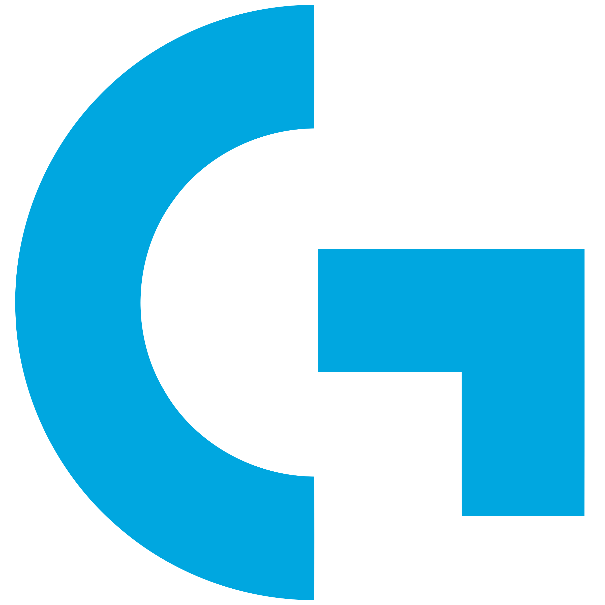
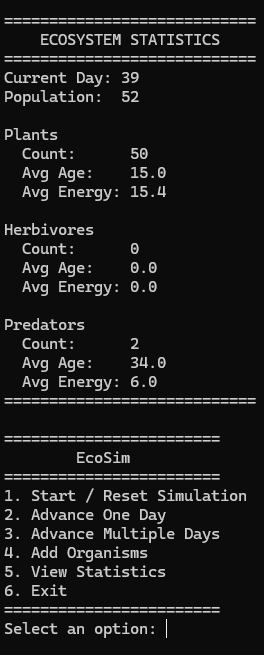

Languages
Java, C#, Python, TypeScript, JavaScript, C, C++, PHP, Lua, HTML, CSS, SQL
Software Engineer & Product Developer
I’m a software engineer with years of hands-on experience building full-stack applications, microservices, automation tools, and embedded systems. I especially enjoy projects that cross the boundary between software and hardware, where I can take an idea from initial design through development, prototyping, testing, and a finished physical product.
About Me
I started experimenting with HTML when I was around 12 years old, and that curiosity eventually grew into a career in software engineering. Since then, I’ve worked with everything from full-stack applications and microservices to radio systems, embedded hardware, Raspberry Pis, microcontrollers, CAD, and 3D printing. Professionally, I’ve worked across defense, telecommunications, and software engineering. Outside of work, I continue designing and building projects that combine electronics, firmware, software, and mechanical design. I enjoy learning new technologies by applying them to real problems and taking projects from an initial concept to something functional, maintainable, and useful.
Java, C#, Python, TypeScript, JavaScript, C, C++, PHP, Lua, HTML, CSS, SQL
Git, GitHub, Docker, Kubernetes, Jenkins, Ansible, Visual Studio, VS Code, Linux
Embedded systems, C++, product development, clean architecture, and maintainable software
Featured Work
My projects range from large-scale software systems and desktop utilities to game-server plugins and complete embedded products combining firmware, electronics, mechanical design, and user-facing software. I enjoy solving practical problems and taking projects from an initial idea to something functional, maintainable, and useful.
Embedded Systems & Product Development
Chrono944 is a modern replacement for the factory digital clock found in later Porsche 944 models. I designed it to preserve the appearance and fit of the original interior while adding modern functionality through a custom embedded system. The project combines C++ firmware, custom electronics, Bluetooth connectivity, a companion mobile application, CAD, 3D printing, and product design into a single integrated device.
Chrono944 has required me to approach development as a complete product rather than an isolated software project. I’ve had to make decisions involving firmware architecture, power electronics, wireless communication, user-interface design, mechanical tolerances, manufacturing, testing, and maintainability. It has reinforced how important it is to design each part of a system around the constraints of the others and has given me experience carrying an idea from early prototypes toward a product intended for real users.

Java & Bukkit Plugin Development
Reinforcement is an open-source Bukkit plugin I was commissioned to develop for Minecraft servers. It allows players to reinforce blocks with other materials, adding a configurable protection system while maintaining persistent reinforcement data between server sessions.
Reinforcement strengthened my experience designing software for an environment where performance, configurability, and long-term state all matter. Supporting different server configurations required keeping the implementation flexible while still minimizing unnecessary processing. Building it as a commissioned project also meant translating someone else's requirements into a system that was reliable and straightforward to configure and maintain.

C# & Windows Desktop Utility
Logitech Mute Indicator is a lightweight C# system tray application that monitors microphone activity and provides an immediate visual indication through compatible Logitech RGB hardware. It was designed as a simple background utility that provides useful feedback without requiring a traditional application window.
This project gave me an opportunity to integrate multiple Windows-facing APIs and hardware interfaces into a utility that is intended to quietly run in the background. It reinforced the importance of handling hardware state changes and persistence cleanly, since devices can disappear, reconnect, or change between sessions. It also demonstrated how a relatively small application can solve a practical problem by connecting software state with physical feedback.

Java & Bukkit Plugin Development
NameHide is an open-source Bukkit plugin I was commissioned to develop that hides player nameplates when another player is not actually visible. Instead of relying on the normal always-visible Minecraft nametag behavior, the plugin dynamically displays nameplates based on whether a player should be visible to the viewer.
NameHide required approaching a simple user-facing feature from a less obvious technical direction. Rather than constantly manipulating normal nametags, the solution combines scoreboard behavior with temporary client-side entities to provide more control over what each player sees. The project reinforced my interest in finding efficient solutions by understanding the capabilities and limitations of the underlying platform instead of forcing the most straightforward implementation.

C++ Simulation
EcoSim is a C++ ecosystem simulation that models interactions between plants, herbivores, and predators. The simulation advances over time as organisms feed, hunt, reproduce, age, and die, creating population changes based on the current state of the ecosystem.
EcoSim gave me an opportunity to work more deeply with modern C++ concepts including object ownership, polymorphism, class design, and separation of responsibilities. One of the more interesting challenges was balancing the simulation so populations behaved reasonably without immediately going extinct or growing uncontrollably. Solving that required repeated testing, debugging, tuning, and refinement of the interactions between different systems.
Contact
I’m always interested in software engineering, embedded systems, hardware development, and projects that involve solving interesting technical problems. You can find more of my work on GitHub or connect with me through LinkedIn or email.